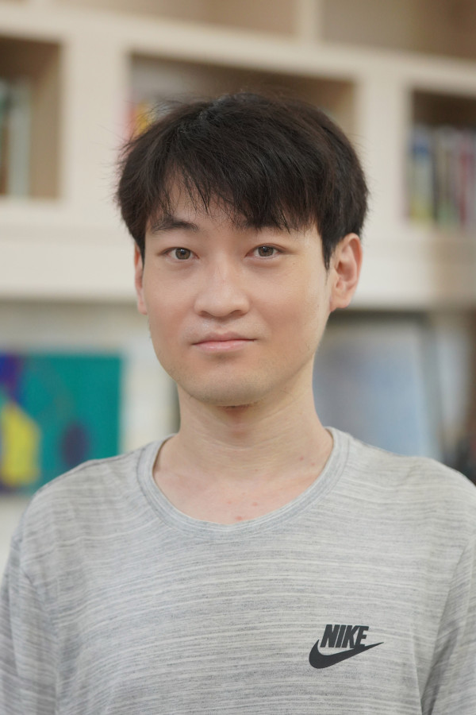

Qirui Li
Assistant Professor
Department of Mathematics
Pohang University of Science and Technology
Pohang, Gyeongbuk, Korea
I work in number theory and arithmetic geometry. My interests are the
relative trace formula approach to Gross–Zagier type formulas, the
linear arithmetic fundamental lemma, and the geometry of Lubin–Tate
and Rapoport–Zink spaces.
qiruili [at] postech.ac.kr
Publications and Preprints
- Arithmetic transfer for inner forms of GL2n,
with Andreas Mihatsch.
Forum Math. Sigma 13 (2025), e128.
- On the linear AFL: the non-basic case,
with Andreas Mihatsch.
Compos. Math. 161 (2025), no. 2, 385–425.
- Intersections in Lubin–Tate space and bi-quadratic fundamental lemmas,
with Ben Howard.
Amer. J. Math. (2025).
- A computational proof of the biquadratic linear AFL for GL4.
Preprint (2025).
- An intersection formula of CM cycles on Lubin–Tate spaces.
Duke Math. J. 171 (2022), no. 9, 1923–2011.
- A proof of the linear arithmetic fundamental lemma for GL4.
Canad. J. Math. 74 (2022), no. 2, 381–427.
- Extensions of vector bundles on the Fargues–Fontaine curve.
J. Inst. Math. Jussieu 21 (2022), no. 2, 487–532.
- On Keating's results of formal module endomorphisms lifting.
Preprint (2019).